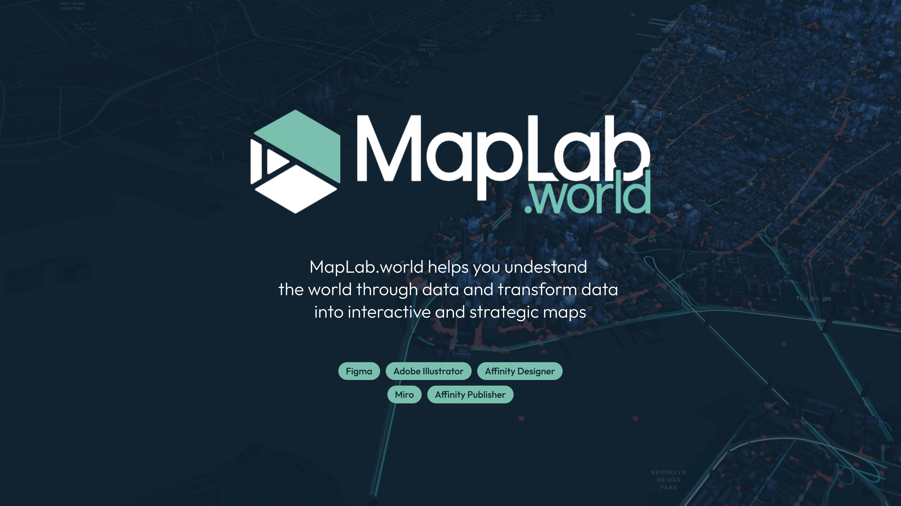
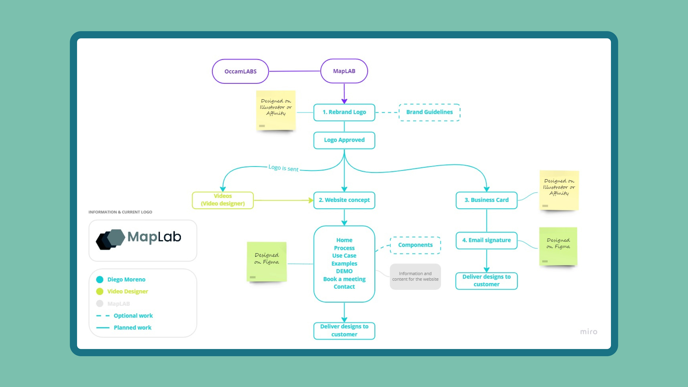
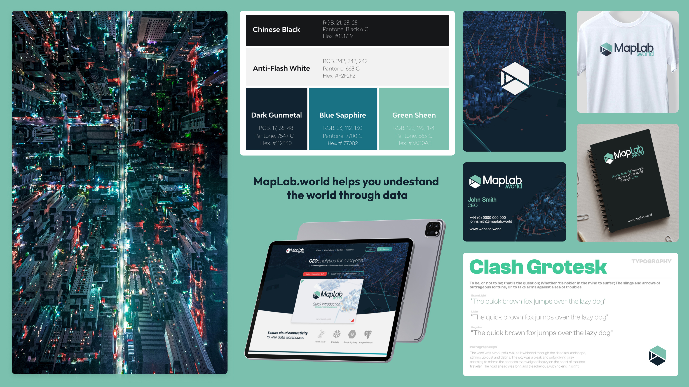
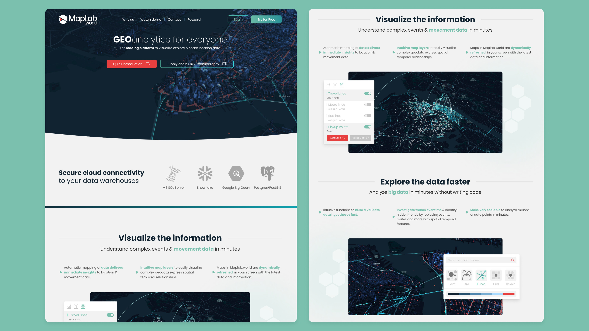

07 — Branding · Website
MapLab.world
MapLab.world turns location data into interactive, strategic maps. It needed a brand and a website as clear and technical as the platform itself.

Overview
MapLab.world is a geoanalytics platform that helps teams understand the world through data and see it as interactive maps. It needed a sharper identity and a website that explains a technical product clearly.
I redesigned the logo and built the identity around it — palette, typography, brand book guidelines and stationery — then designed the marketing website.
Challenge
- 01The existing logo needed a rebrand that looks sharp on dark map interfaces as well as in print.
- 02A data platform had to feel precise and approachable at once, with a palette and typography that work on dark and light surfaces.
- 03The website had to explain a complex product — visualise, explore and connect data — in a few clear sections.
- 04Logo, guidelines, stationery and site needed to hold together as one coherent system.
Process
I mapped the project in Miro before designing: logo rebrand first, then the website concept in Figma, the business card and the email signature, with brand guidelines alongside. A video designer worked on the videos in parallel.



Solution
A new hexagonal mark and wordmark, a palette of dark gunmetal, blue sapphire and green sheen with Clash Grotesk typography, a brand book, matching stationery, and a website concept that presents the platform in clear, focused sections.
At a glance